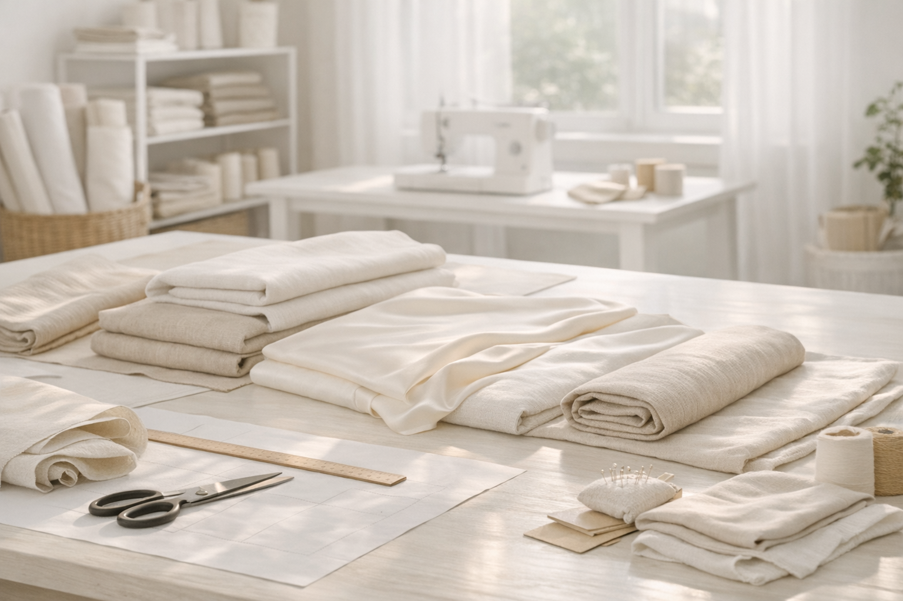
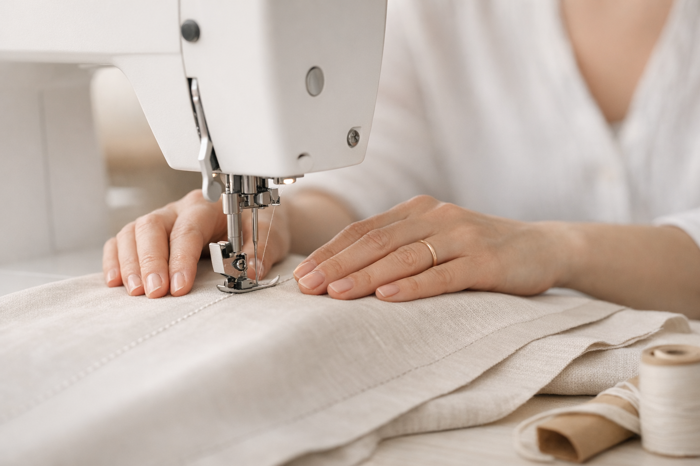
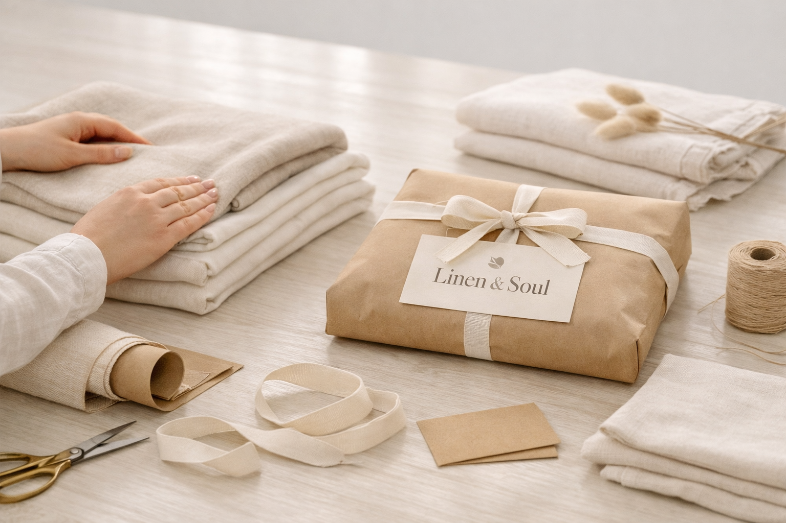

100% натуральные ткани: сатин, лён, бамбук, тенсел, шёлк. Гарантия 365 дней
Перейти в каталогМы используем только натуральные ткани, которые сохраняют внешний вид и комфорт долгие годы.
Плотное переплетение, гладкая поверхность и высокая износостойкость. Идеален для постельного белья.
Дышащий, прочный, гипоаллергенный. С каждым использованием становится мягче.
Нежный, антибактериальный, экологичный. Подходит даже для чувствительной кожи.
Экологичное волокно нового поколения: мягкое, дышащее, гипоаллергенное. Отличается шелковистостью и высокой прочностью.
Натуральный премиальный материал с гладкой поверхностью и эффектом охлаждения. Идеален для деликатного текстиля.
Также мы используем перкаль — натуральную хлопковую ткань с матовой поверхностью и высокой прочностью. Подходит для тех, кто любит прохладное и плотное постельное бельё.
Мы не производим ткани — мы создаём текстильные изделия, которые служат долго и дарят комфорт каждый день.
Каждая деталь выкраивается вручную или на оборудовании с высокой точностью.
Опытные мастера следят за ровностью швов, плотностью стежков и аккуратностью обработки.
Готовые изделия проходят отпаривание, выравнивание и подготовку к упаковке.
Каждое изделие проходит проверку на прочность швов, точность размеров и отсутствие дефектов.
Мы уверены в качестве наших изделий и предоставляем годовую гарантию на текстиль.


